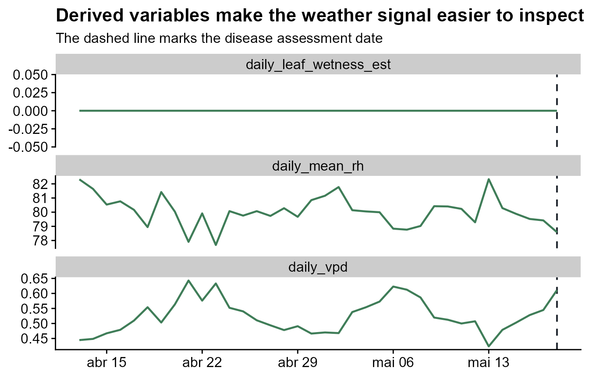
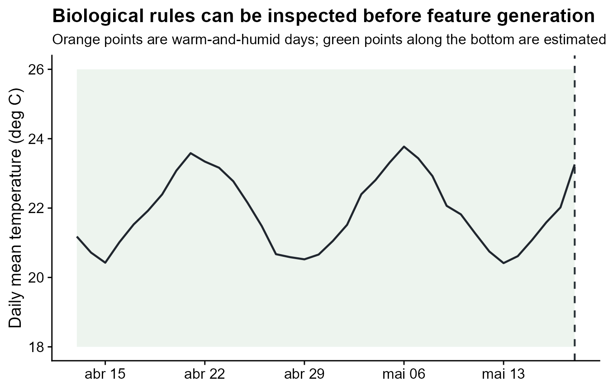
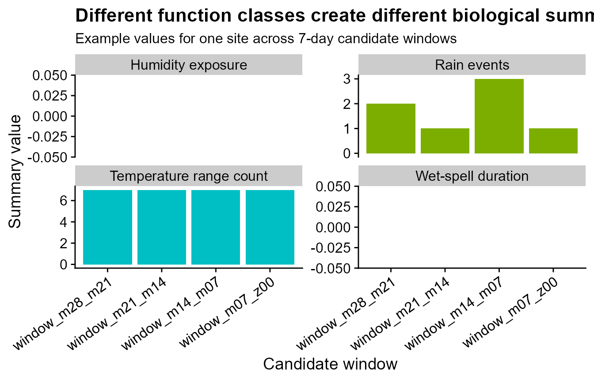

Deriving biologically meaningful weather summaries
Source:vignettes/biological-weather-summaries.Rmd
biological-weather-summaries.RmdThis article shows how to turn weather records into predictors that are easier to interpret biologically. A mean temperature can be useful, but plant disease risk often depends on exposure: how many observations were warm enough, how long humidity stayed high, whether rain occurred as an event, or how much thermal time accumulated inside a candidate window.
Function glossary
These functions can be placed inside statistics to
create biologically interpretable summaries from one weather variable at
a time.
| Function | What it does | Typical use |
|---|---|---|
count_above() / count_at_or_above()
|
Count observations above a threshold | Hot, humid, rainy, or wet observations |
count_between() |
Count observations inside a biological range | Days with temperature between lower and upper limits |
proportion_above() /
proportion_between()
|
Return the fraction of valid observations meeting a rule | Compare exposure across windows with different numbers of records |
sum_above() / sum_between()
|
Sum values only when a threshold rule is met | Rain amount during selected conditions |
mean_above() / mean_between()
|
Average values only when a threshold rule is met | Mean temperature during favorable periods |
degree_hours_above() /
degree_days_above()
|
Accumulate thermal time above a base value | Temperature-driven development |
humid_hours() / proportion_humid()
|
Count or quantify high-humidity observations | Humidity exposure |
rainy_hours() / rain_events()
|
Count rainy observations or consecutive rain events | Event-driven rainfall exposure |
wet_hours() / wet_days()
|
Count wet observations | Leaf-wetness duration |
max_consecutive_wet_hours() |
Find the longest uninterrupted wet period | Continuous infection-favorable wetness |
derive_vpd() / derive_dew_point()
|
Add derived humidity variables to the weather table | Atmospheric dryness and dew-point interpretation |
derive_leaf_wetness_from_rh() |
Estimate wetness from high relative humidity | Projects without measured leaf wetness |
Start from daily weather
The bundled demo data contain one daily weather series per site and one disease assessment per site. This article starts from daily data so the focus stays on the biological summaries rather than on raw-data preparation.
data(window_pane_demo_data)
weather <- window_pane_demo_data$weather
assessments <- window_pane_demo_data$assessments
knitr::kable(head(weather))| site_id | date | time | daily_mean_temp | daily_mean_rh | daily_sum_rain | daily_sum_leaf_wetness |
|---|---|---|---|---|---|---|
| S01 | 2023-12-01 | 2023-12-01 | 22.33292 | 80.61750 | 7.15 | 6 |
| S01 | 2023-12-02 | 2023-12-02 | 22.67500 | 78.64167 | 0.85 | 4 |
| S01 | 2023-12-03 | 2023-12-03 | 23.35333 | 79.42042 | 3.61 | 7 |
| S01 | 2023-12-04 | 2023-12-04 | 23.39167 | 77.86875 | 0.00 | 3 |
| S01 | 2023-12-05 | 2023-12-05 | 23.13667 | 78.99000 | 6.59 | 6 |
| S01 | 2023-12-06 | 2023-12-06 | 22.63375 | 80.20750 | 0.86 | 6 |
Derive variables before summarizing
Some epidemiological predictors are not measured directly. For
example, vapor pressure deficit is derived from temperature and relative
humidity, and leaf wetness can be approximated from high relative
humidity when measured wetness is not available. windcut
keeps this step explicit: the original weather table is returned with
new columns.
weather <- weather |>
derive_vpd(daily_mean_temp, daily_mean_rh, name = "daily_vpd") |>
derive_leaf_wetness_from_rh(
daily_mean_rh,
threshold = 85,
name = "daily_leaf_wetness_est"
)
weather |>
select(site_id, time, daily_mean_temp, daily_mean_rh, daily_vpd, daily_leaf_wetness_est) |>
slice_head(n = 8) |>
knitr::kable()| site_id | time | daily_mean_temp | daily_mean_rh | daily_vpd | daily_leaf_wetness_est |
|---|---|---|---|---|---|
| S01 | 2023-12-01 | 22.33292 | 80.61750 | 0.5229513 | 0 |
| S01 | 2023-12-02 | 22.67500 | 78.64167 | 0.5883544 | 0 |
| S01 | 2023-12-03 | 23.35333 | 79.42042 | 0.5906425 | 0 |
| S01 | 2023-12-04 | 23.39167 | 77.86875 | 0.6366462 | 0 |
| S01 | 2023-12-05 | 23.13667 | 78.99000 | 0.5951597 | 0 |
| S01 | 2023-12-06 | 22.63375 | 80.20750 | 0.5438584 | 0 |
| S01 | 2023-12-07 | 22.24750 | 79.78875 | 0.5424861 | 0 |
| S01 | 2023-12-08 | 21.59917 | 80.14833 | 0.5121772 | 0 |
The plot below shows why this is useful. The derived variables make the biological interpretation visible before any modeling: high humidity creates estimated wetness, and lower VPD indicates more humid atmospheric conditions. The 85% relative-humidity threshold is used here only to make the example easy to see; a real analysis should use a biologically justified threshold.
example_site <- assessments$site_id[1]
example_reference <- assessments %>%
filter(site_id == example_site) %>%
pull(assessment_time)
derived_plot_data <- weather %>%
filter(site_id == example_site) %>%
filter(time >= example_reference - 35 * 86400, time <= example_reference) %>%
select(time, daily_mean_rh, daily_vpd, daily_leaf_wetness_est) %>%
pivot_longer(
cols = c(daily_mean_rh, daily_vpd, daily_leaf_wetness_est),
names_to = "variable",
values_to = "value"
)
ggplot(derived_plot_data, aes(time, value)) +
geom_vline(
xintercept = example_reference,
linetype = "dashed",
color = "#20262e",
linewidth = 0.7
) +
geom_line(color = "#3f7d58", linewidth = 0.8) +
facet_wrap(~ variable, scales = "free_y", ncol = 1) +
labs(
title = "Derived variables make the weather signal easier to inspect",
subtitle = "The dashed line marks the disease assessment date",
x = NULL,
y = NULL
) +
theme_half_open()
Translate biological ideas into summaries
Each summary function returns a function that can be used inside
statistics. The names you choose on the left become part of
the output feature names. This makes the resulting columns readable:
daily_mean_rh_humid_days is easier to interpret than an
anonymous transformed value.
summary_statistics <- list(
daily_mean_temp = list(
mean = "mean",
days_18_26 = count_between(18, 26),
thermal_time_10 = degree_hours_above(10)
),
daily_mean_rh = list(
mean = "mean",
humid_days = humid_hours(85),
prop_humid = proportion_at_or_above(85)
),
daily_vpd = list(
mean = "mean",
dry_days = count_above(1.2)
),
daily_sum_rain = list(
total = "sum",
rainy_days = rainy_days(0),
rain_events = rain_events(0.2)
),
daily_leaf_wetness_est = list(
wet_days = wet_days(0),
max_wet_spell = max_consecutive_wet_hours(0)
)
)The next plot shows several of those biological rules on one site. Warm days are observations inside the 18 to 26 degree C range. Humid days have relative humidity at or above 85%. Wet days are derived from relative humidity.
rule_plot_data <- weather %>%
filter(site_id == example_site) %>%
filter(time >= example_reference - 35 * 86400, time <= example_reference) %>%
mutate(
warm_18_26 = daily_mean_temp >= 18 & daily_mean_temp <= 26,
humid = daily_mean_rh >= 85,
wet_estimated = daily_leaf_wetness_est > 0
)
ggplot(rule_plot_data, aes(time, daily_mean_temp)) +
geom_vline(
xintercept = example_reference,
linetype = "dashed",
color = "#20262e",
linewidth = 0.7
) +
geom_ribbon(
aes(ymin = 18, ymax = 26),
fill = "#6ea87d",
alpha = 0.12
) +
geom_line(color = "#20262e", linewidth = 0.8) +
geom_point(
data = rule_plot_data %>% filter(warm_18_26 & humid),
color = "#c47f2c",
size = 2.4
) +
geom_point(
data = rule_plot_data %>% filter(wet_estimated),
aes(y = 17),
color = "#2b6c4f",
size = 2,
alpha = 0.85
) +
labs(
title = "Biological rules can be inspected before feature generation",
subtitle = "Orange points are warm-and-humid days; green points along the bottom are estimated wet days",
x = NULL,
y = "Daily mean temperature (deg C)"
) +
theme_half_open()
Summarize inside candidate windows
Now the biological summaries are applied inside 7-day candidate windows ending at the assessment date. The result is one row per site and one feature column per summary-window combination.
windows <- make_windows(
min_offset = -28,
max_offset = 0,
width = 7,
slide_by = 7,
reference_col = "assessment_time"
)
features <- window_pane(
weather = weather,
assessments = assessments,
windows = windows,
reference_col = "assessment_time",
id_col = "site_id",
response_col = "disease_intensity",
unit = "days",
statistics = summary_statistics
)
features %>%
select(1:12) %>%
slice_head(n = 6) %>%
knitr::kable()| site_id | assessment_time | disease_intensity | n_obs_window_m28_m21 | daily_mean_temp_mean_window_m28_m21 | daily_mean_temp_days_18_26_window_m28_m21 | daily_mean_temp_thermal_time_10_window_m28_m21 | daily_mean_rh_mean_window_m28_m21 | daily_mean_rh_humid_days_window_m28_m21 | daily_mean_rh_prop_humid_window_m28_m21 | daily_vpd_mean_window_m28_m21 | daily_vpd_dry_days_window_m28_m21 |
|---|---|---|---|---|---|---|---|---|---|---|---|
| S01 | 2024-05-18 | 75.2 | 7 | 22.79661 | 7 | 89.57625 | 79.34881 | 0 | 0 | 0.5740978 | 0 |
| S02 | 2024-05-07 | 59.2 | 7 | 21.73744 | 7 | 82.16208 | 80.51815 | 0 | 0 | 0.5099807 | 0 |
| S03 | 2024-05-20 | 53.9 | 7 | 22.09607 | 7 | 84.67250 | 79.74393 | 0 | 0 | 0.5415874 | 0 |
| S04 | 2024-04-12 | 71.7 | 7 | 21.06881 | 7 | 77.48167 | 80.37393 | 0 | 0 | 0.4902537 | 0 |
| S05 | 2024-04-29 | 80.9 | 7 | 21.83857 | 7 | 82.87000 | 80.00417 | 0 | 0 | 0.5252337 | 0 |
| S06 | 2024-04-15 | 87.2 | 7 | 21.74185 | 7 | 82.19292 | 80.41304 | 0 | 0 | 0.5115775 | 0 |
Compare function classes in the output
The final feature table is ordinary modeling data. Each column combines three pieces of information: the weather variable, the biological summary, and the relative-time window. At this stage, the goal is only to confirm that the functions created interpretable columns; screening and modeling can come later.
The table below selects one example from several function classes: a temperature range count, thermal accumulation, humidity exposure, rain events, and wet-spell duration.
example_columns <- features |>
select(
site_id,
contains("daily_mean_temp_days_18_26"),
contains("daily_mean_temp_thermal_time_10"),
contains("daily_mean_rh_humid_days"),
contains("daily_sum_rain_rain_events"),
contains("daily_leaf_wetness_est_max_wet_spell")
) |>
select(1:11)
example_columns |>
slice_head(n = 5) |>
knitr::kable()| site_id | daily_mean_temp_days_18_26_window_m28_m21 | daily_mean_temp_days_18_26_window_m21_m14 | daily_mean_temp_days_18_26_window_m14_m07 | daily_mean_temp_days_18_26_window_m07_z00 | daily_mean_temp_thermal_time_10_window_m28_m21 | daily_mean_temp_thermal_time_10_window_m21_m14 | daily_mean_temp_thermal_time_10_window_m14_m07 | daily_mean_temp_thermal_time_10_window_m07_z00 | daily_mean_rh_humid_days_window_m28_m21 | daily_mean_rh_humid_days_window_m21_m14 |
|---|---|---|---|---|---|---|---|---|---|---|
| S01 | 7 | 7 | 7 | 7 | 89.57625 | 77.40792 | 90.13833 | 77.73292 | 0 | 0 |
| S02 | 7 | 7 | 7 | 7 | 82.16208 | 85.40125 | 81.48792 | 86.79583 | 0 | 0 |
| S03 | 7 | 7 | 7 | 7 | 84.67250 | 82.00083 | 84.60875 | 82.62000 | 0 | 0 |
| S04 | 7 | 7 | 7 | 7 | 77.48167 | 90.14833 | 77.92208 | 90.34417 | 0 | 0 |
| S05 | 7 | 7 | 7 | 7 | 82.87000 | 85.96042 | 81.67333 | 86.11917 | 0 | 0 |
A compact plot is often easier to inspect than a very wide table. Here one site is used only as a worked example, and the facets separate the function classes.
class_plot_data <- features |>
filter(site_id == example_site) |>
select(
contains("daily_mean_temp_days_18_26"),
contains("daily_mean_rh_humid_days"),
contains("daily_sum_rain_rain_events"),
contains("daily_leaf_wetness_est_max_wet_spell")
) |>
pivot_longer(
cols = everything(),
names_to = "feature",
values_to = "value"
) |>
mutate(
window = sub(".*_window_", "window_", feature),
summary_class = case_when(
grepl("days_18_26", feature) ~ "Temperature range count",
grepl("humid_days", feature) ~ "Humidity exposure",
grepl("rain_events", feature) ~ "Rain events",
grepl("max_wet_spell", feature) ~ "Wet-spell duration",
TRUE ~ "Summary"
),
window = factor(window, levels = unique(window))
)
ggplot(class_plot_data, aes(window, value, fill = summary_class)) +
geom_col(show.legend = FALSE) +
facet_wrap(~ summary_class, scales = "free_y", ncol = 2) +
labs(
title = "Different function classes create different biological summaries",
subtitle = "Example values for one site across 7-day candidate windows",
x = "Candidate window",
y = "Summary value"
) +
theme_half_open() +
theme(axis.text.x = element_text(angle = 35, hjust = 1))
Recommended practices
Choose summaries that match the biology of the pathosystem. Use counts or proportions for threshold exposure, spell summaries for uninterrupted favorable periods, rain-event summaries for event-driven processes, and thermal-time summaries when accumulation above a base temperature is meaningful.